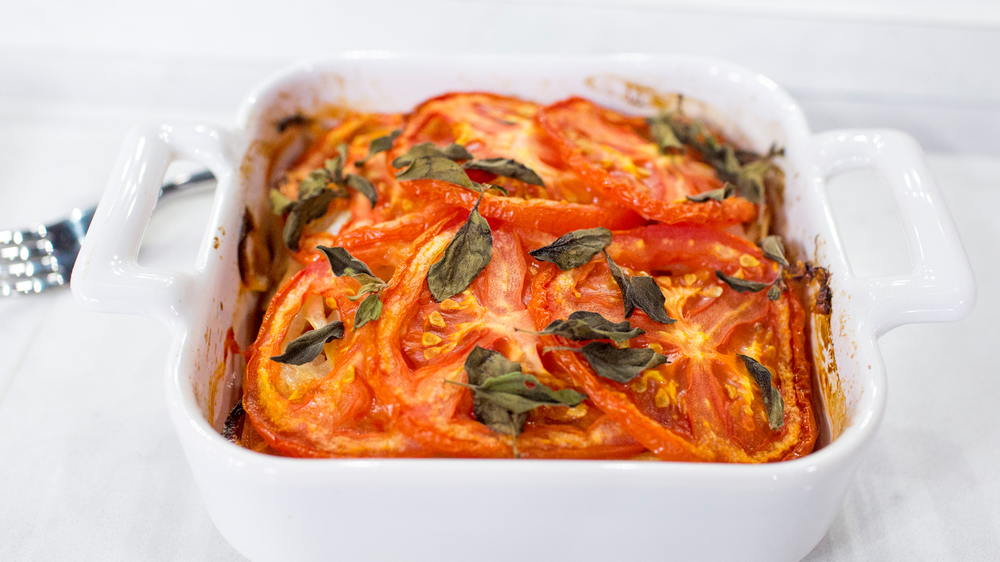

CASSEROLE

THE CASSEROLE
The Tomato Sauce Casserole is a very delicious meal.
INGRIDIENTS
- 6 vine ripen tomatoes, sliced.
- 1 tablespoon mayonaisse.
- 1 cup shredded cheddar cheese
- Salt and Pepper.
STEPS
- Preheat oven to 350 degrees F.
- Place a layer of tomato slices in an 8X8 inch baking pan. Spread thin layer of mayonaisse on the tomatoes
and sprinkle with about 1/4 of the cheddar cheese and add salt and pepper. Repeat layers, ending with the rest
of the chredded cheese.
- Bake until tomatoes are softened and cheese is melted and bubbly, about 25-30mins.
CLICK TO GO BACK TO HOME PAGE